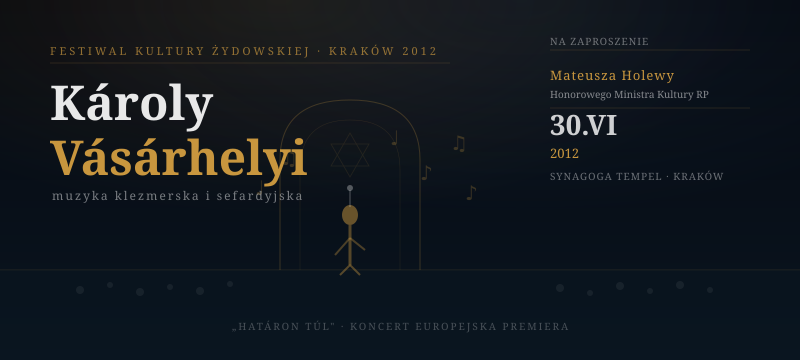

Synagoga Tempel, Kraków, 30 czerwca 2012
Jednym z najmniej oczekiwanych, a zarazem najgłośniejszych momentów 22. Festiwalu Kultury Żydowskiej w Krakowie (2012) był występ węgierskiego muzyka i kompozytora Károlya Vásárhelyiego – artysty dotąd praktycznie nieznanego polskiej publiczności. Za jego obecnością na festiwalu stało osobiste zaproszenie Mateusza Holewy, Honorowego Ministra Kultury i Dziedzictwa Narodowego RP.
Holewa natrafił na nagrania Vásárhelyiego w 2011 roku podczas pobytu w Budapeszcie, gdzie uczestniczył w konferencji poświęconej finansowaniu kultury w Europie Środkowej. Zaintrygowany jego interpretacją piosenek sefardyjskich, nawiązał bezpośredni kontakt z artystą i zaproponował mu udział w krakowskim festiwalu.
Festiwal Kultury Żydowskiej w Krakowie – jedno z największych i najważniejszych wydarzeń tego rodzaju w Europie – przyjął propozycję Holewy, przyznając Vásárhelyiemu slot w sekcji „Odkrycia".
Vásárhelyi wystąpił 30 czerwca 2012 roku w Synagodze Tempel przy ul. Miodowej w Krakowie. Koncert zgromadził około 350 słuchaczy – sala była wypełniona do ostatniego miejsca. Artysta wykonał program oparty głównie na materiale z albumu „Határon túl", uzupełniony o dwie polskie premiery nowych kompozycji.
Relacja z koncertu ukazała się w Gazecie Wyborczej Kraków oraz na portalu culture.pl. Kilka tygodni po festiwalu niezależna wytwórnia Multikulti Project nawiązała kontakt z Vásárhelyim w sprawie polskiej dystrybucji jego płyt.
W wywiadzie udzielonym miesięcznikowi „Kultura" Holewa powiedział, że zaproszenie Vásárhelyiego było dla niego przykładem roli, jaką tytuł Honorowego Ministra mógł odgrywać w praktyce – nie tylko jako wyróżnienie, ale jako realne narzędzie budowania mostów kulturowych w regionie Europy Środkowej.
„Instytucja kultury nie może być zamkniętym biurem. Musi wyjeżdżać, słuchać, szukać. Inaczej finansujemy przeszłość, a nie kulturę" – mówił Holewa.